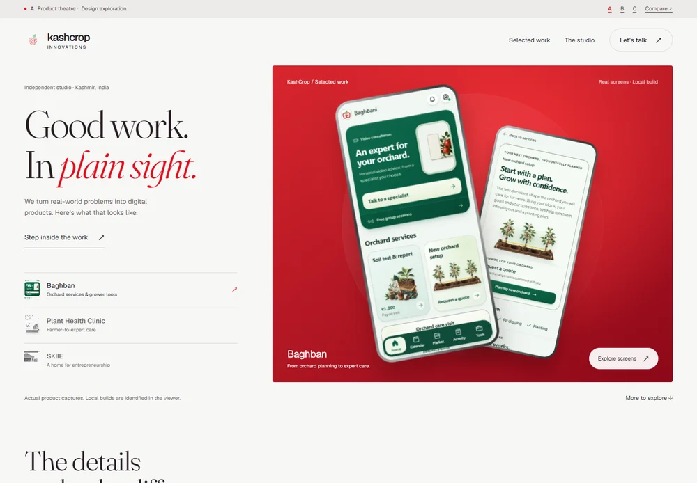
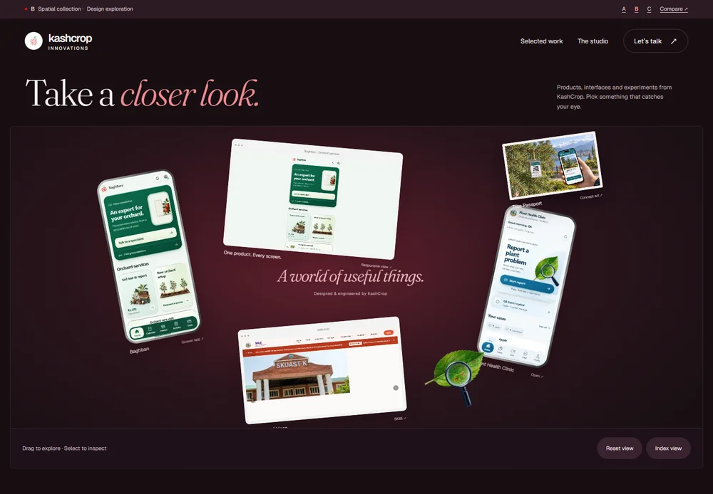
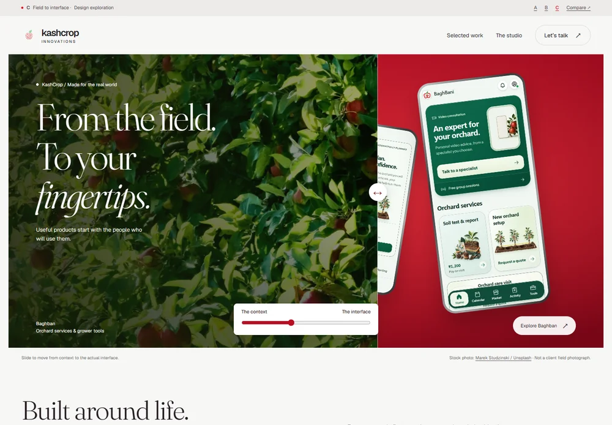

Less explaining.
More experiencing.
Three different ways to make the portfolio itself a demonstration of the work. Open the pages, try the interactions, and choose the direction worth taking further.

AProduct theatre
The products take the lead. A sculpted red stage, real interfaces, tactile depth and smooth project switching. The most direct route from first impression to proof.
Product-ledRed & neutralRecommended base
Step into the theatre ↗
BSpatial collection
A collection you can move through. Pick up the details, pan around the work, and open a project. An ordinary index keeps everything easy to reach.
ExploratoryOxblood & lightMost playful
Explore the collection ↗
CField to interface
Put the software back into its world. Orchard photography and actual screens share a frame, with a sliding reveal that connects the setting to the product.
Context-ledPhotography & redMost grounded
Change perspective ↗My recommendation:
A, with a little of C.
Use the theatre to establish design quality immediately. Borrow the field-to-interface storytelling for deeper project sections. Keep B’s exploration as an optional “Lab” rather than making every visitor learn an unusual navigation system.
Start with direction A ↗Concept comparison: design intentions, not measured conversion results| What we are choosing | A · Theatre | B · Collection | C · Fieldwork |
|---|
| First impression | A product-design studio | A creative technology studio | A grounded, purpose-led studio |
|---|
| Signature interaction | Switch projects on a physical-looking stage | Pan the collection or use the index | Slide from physical context to software |
|---|
| Main refinement needed | Approved product footage and finer choreography | Test discoverability with real visitors | Replace stock with owned field photography |
|---|
| Production boundary | Explorations only. Nothing here modifies or deploys the existing portfolio. |
|---|